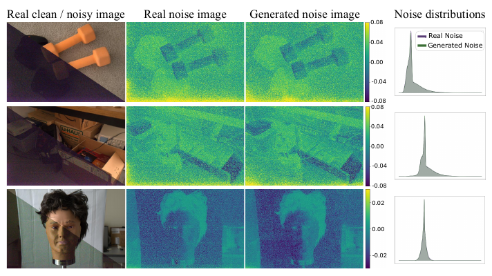
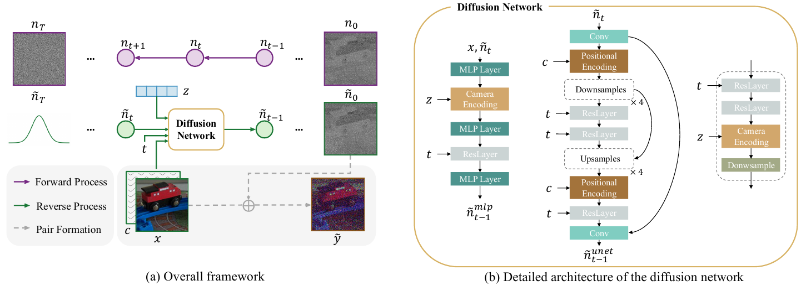
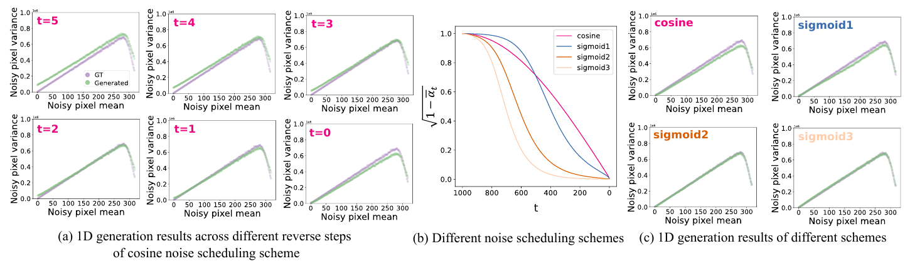
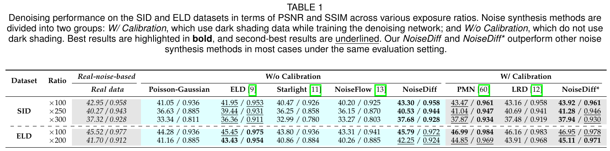
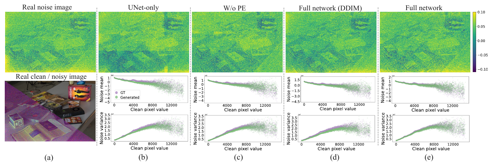
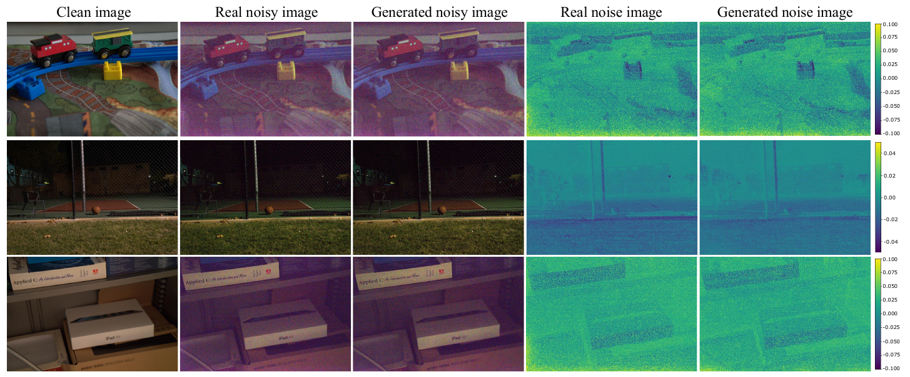
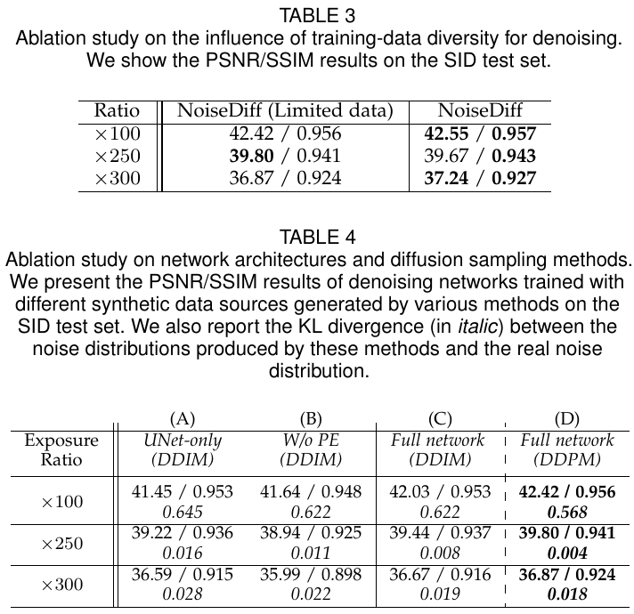
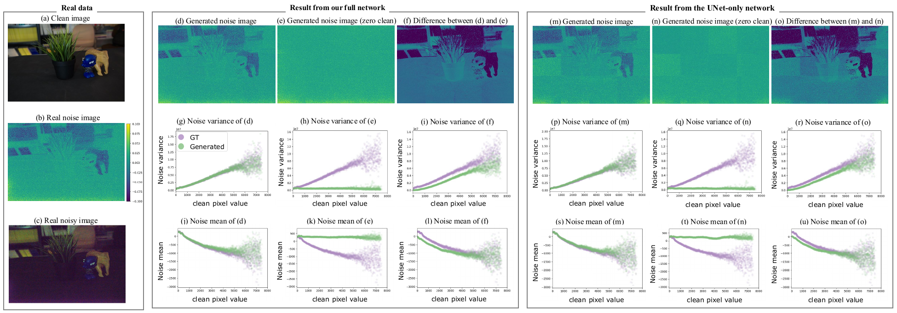

论文
NoiseDiff：用条件扩散模型学一台相机的暗光 RAW 噪声，再用它造去噪训练对

代码说明：官方仓库 IVRL/NoiseDiff（本页克隆为
repo/，HEAD9429377，2026-07-25）包含扩散模型和去噪器的训练、测试脚本。预训练权重放在 Google Drive；生成的噪声数据放在 HuggingFace SkyeLu/NoiseDiffData，目前只有 7 个 (ISO, 曝光比) 设定，共 47.5 GB，README 说完整数据还在上传。数据路径写死为作者集群上的/scratch/...（repo/dataloader/dataset.py:L22-L23）。去噪部分依赖 PMN 仓库的resources/（暗场阴影和噪声参数）。出版信息：TPAMI DOI 10.1109/TPAMI.2025.3598330，2025-08-13 在线，印刷版 vol. 48, no. 10, pp. 11346–11356；仓库 README 和 HuggingFace 卡片都标注为 ICCP 2025 论文。
专项定位：这篇放在「手机照片 → 相机画质：细节与质感迁移」专项里读（入口 phone2camera-2026）。专项 §6 第 (5) 步要从真实目标相机 RAW 反向合成「伪 iPhone RAW」，最后一步是「加实测 iPhone 噪声」，目前的方案是按 ISO、按 Bayer 通道标定的异方差高斯（raw-degradation-sr-2026），更早的 unprocessing-2018 用的是跨设备的两项泊松-高斯。NoiseDiff 代表另一条路：不写噪声公式，直接从配对数据里学噪声的分布。本页要回答的是：它学到了物理模型给不了的什么，代价是什么，什么时候值得换成它。§6 专门比较它和只拍暗场的物理流程 Noise Modeling in One Hour（下称 noise-one-hour，CVPR 2025，arXiv:2505.00045）。
1. 出发点：暗光噪声不是泊松-高斯，配对数据又难拍
暗光 RAW 去噪最好的办法是用真实配对数据训练：同一场景拍一张短曝光（带噪）和一张长曝光（干净）。这种数据很难拍：相机要固定、场景要静止，所以数量少、场景单一。SID Sony 训练集一共 1,865 对，但只有 161 个不同的干净场景，分布在 25 个 ISO、62 种 (ISO, 曝光比) 组合上，其中 41 种组合不到 6 个场景（我按 SID 官方 Sony_train_list.txt 统计；论文给的例子是 ISO 250 有 28 个场景，ISO 2500 只有 1 个 [§4.5]）。
于是大家转向合成噪声。物理路线从泊松-高斯模型出发 [§2, Eq. 1]：
—— 翻译: 传感器读数 x = 增益 g ×（量子效率 α × 实际收到的光子数 u + 暗电流噪声 n_d）+ 读出噪声 n_r。光子数服从均值为 u* 的泊松分布，所以第一项的方差跟着信号走（散粒噪声）；其余各项合成一个与信号无关的高斯项。只有两个参数要标：增益和高斯方差。
这个模型在暗光下不够用。增益开得很高时，与信号无关的那部分不再是独立高斯：有行噪声（条带）、固定模式噪声、黑电平误差，还有随位置变化的低频偏移。ELD（CVPR 2020 / TPAMI 2021）给这些成分逐个建模，PMN（ACM MM 2022 / TPAMI 2023）和 LLD（CVPR 2023）进一步直接用暗场（盖上镜头拍的纯噪声帧）去采样或扣掉这部分。论文认为这条路的问题是要有暗场，而公开数据集通常不提供，所以本文假设拿不到暗场 [§2]。
学习路线（C2N、Starlight、LRD 用 GAN，NoiseFlow 用归一化流）不需要写公式，但 GAN 训练不稳、难以覆盖多峰分布，归一化流受架构限制 [§1–2]。本文的问题是：扩散模型以擅长拟合复杂分布著称，直接拿来学暗光噪声行不行？答案是直接用不行，要改三处：网络结构、条件、噪声调度。
SID / ELD
两个 Sony α7S2 暗光配对数据集。SID 用于训练和测试；ELD 由另一台同型号相机拍摄，只用来测试。
曝光比（ratio）
长曝光时间除以短曝光时间（SID 里是 100、250、300）。短曝光图乘上这个比值后，亮度才和长曝光对齐，噪声也随之放大。
打包 RAW
把 Bayer 马赛克按 2×2 拆成 R、G、B、G 四个半分辨率平面叠在一起。本文的扩散模型和去噪器都在这种 4 通道 RAW 上工作。
暗场 / 暗场阴影（DSC）
暗场是遮光拍的纯噪声帧；大量暗场取平均得到「暗场阴影」，包含黑电平误差和固定模式噪声。DSC 就是在训练和推理时都把它从带噪图里减掉。
FPN / 条带噪声
固定模式噪声：每个像素位置固定的偏移。条带噪声：整行一起偏高或偏低，看起来是横向条纹。两者都和信号无关，但有空间结构。
SNA
PMN 提出的散粒噪声增广：把干净图随机调亮一点，再按泊松分布给带噪图补上对应的散粒噪声，用来增加训练样本的多样性。需要知道增益 K。
DDPM / DDIM
扩散模型的两种采样器。DDPM 走满 1000 步，每步加随机噪声；DDIM 跳着走（本文用 100 步），速度快但方差偏小（§2.4）。
光照校正
评测前用最小二乘把去噪结果整体乘一个系数，对齐到真值的亮度。SID 短、长曝光之间本来就有亮度误差，不校正的话 PSNR 主要在测亮度差（§3.1）。
2. 方法：在打包 RAW 上做条件扩散，生成噪声图而不是带噪图

2.1 学的对象：放大后的短曝光减去长曝光
扩散模型生成的不是带噪图，而是噪声图 n₀。代码里的定义是：
—— 翻译: 把短曝光 RAW 减掉黑电平（负值截成 0）、归一化、乘上曝光比 r，再裁到 [0,1]，然后减掉同样处理过的长曝光图。剩下的就是模型要学的「噪声」。它包含真正的传感器噪声，也包含这对图之间的一切其他差异，比如曝光比不准造成的亮度偏差，以及两次截断留下的偏置。
repo/dataloader/dataset.py:L92-L122 — 训练目标的构造；裁块时一半概率强制取图像最底部
def aug(self, img_list, h, w, phase='train'):
ih, iw, _ = img_list[0].shape
if np.random.uniform() < 0.5:
x = np.random.randint(0, iw - w + 1)
y = np.random.randint(0, ih - h + 1)
else:
x = np.random.randint(0, iw - w + 1)
y = ih - h - 1
for i in range(len(img_list)):
img_list[i] = img_list[i][y:y+h, x:x+w, :]
return img_list
def __getitem__(self, idx):
sample = self.sample_list[idx]
in_path, gt_path, iso, ratio = sample
iso_ratio_idx = self.combination_mapping.get((iso, ratio))
# read raw images
raw = rawpy.imread(in_path)
gt_raw = rawpy.imread(gt_path)
# subtract the black level and convert to 4-channel images
input_norm = raw_util.pack_raw(raw) * ratio
gt_norm = raw_util.pack_raw(gt_raw)
input_norm = input_norm.clip(0., 1.) # (H, W, 4)
noise = (input_norm - gt_norm) # (H, W, 4)
这里有两个论文没写的细节。第一，pack_raw 先做 np.maximum(im - 512, 0)（repo/utils/raw_util.py:L20），黑电平以下的读出噪声被截成 0，暗部噪声因此是单边的，均值偏正。图 8(k) 里「零干净图」生成的噪声均值大约 +300（图中单位），就是这个偏置。第二，aug 有一半概率把裁块固定在图像最底部（L94-L99）。论文的论据是 SID 的低频偏移集中在画面底部 [§3.2, Fig. 6]，这样采样能让模型更常看到这块区域，但论文没有提到这个采样策略，也没有做消融。
还有一个随之而来的现象，读图 8(j) 能看出来：真实「噪声」的均值随干净像素值近似线性下降，到亮端约为干净值的 −15%～−20%（我读图估的）。也就是说，乘了标称曝光比的短曝光图，整体比长曝光暗一截。这不是传感器噪声，是曝光比误差，但它被当成噪声的一部分学了进去。这也解释了为什么评测前一定要做光照校正（§3.1）。
训练时还做了重采样：样本数不到 100 的设定，把它的样本重复到约 100 个（repo/dataloader/dataset.py:L72-L76），与论文附录 9.3 一致。
2.2 双分支网络：逐像素分支看信号，空间分支只看噪声
前向过程是标准的 DDPM（T = 1000）：
—— 翻译: 第 t 步的状态是「保留一部分原噪声图 + 加一部分标准高斯」，t 越大高斯占比越高，t = T 时几乎全是高斯。反向时网络从纯高斯出发，一步步把它还原成像真实噪声的图。
网络的写法按代码整理如下（论文 Fig. 2(b) 画的也是这个结构）：
—— 翻译: 网络输出由两路相加。MLP 分支把干净图 x 和当前状态 n_t 拼在一起，基本逐像素处理，负责「这个亮度的像素该有多大噪声」，即散粒噪声。UNet 分支只看 n_t 和像素坐标 c，有大感受野，负责与信号无关、但有空间结构的成分（条带、低频偏移、FPN）。z 是相机设定，t 是扩散步。输出 v̂ 是 v-参数化下的预测（§4 第 3 条）。
repo/models/archs/Diffusion_arch.py:L583-L604 — 条件编码与 MLP 分支：唯一能看到干净图的一路
# positional condition
pos_emb = self.pos_enc(position) # (B, Cp, H, W)
pos_emb = self.pos_mlp(pos_emb)
# camera condition
iso_ratio_idx = condition['iso_ratio_idx']
iso_emb = self.iso_embed(iso_ratio_idx).unsqueeze(1) # (B, 1, D)
# timestep condition
t = self.time_mlp(time)
# clean image condition
shot_emb = self.shot_mlp1(torch.cat([clean_img, x], dim=1))
r = shot_emb.clone()
shot_emb = self.shot_attn(shot_emb, iso_emb)
shot_emb = self.shot_mlp2(shot_emb)
shot_emb = self.shot_time(shot_emb, t)
shot_emb = shot_emb + r
shot_noise = self.shot_mlp3(shot_emb)
repo/models/archs/Diffusion_arch.py:L606-L646 — UNet 分支只吃 x（即 n_t），坐标在首尾两处注入，最后两路相加（中间编解码循环略）
x = self.init_conv(x)
r = x.clone()
h = []
x = self.pos_block1(x, pos_emb)
for block1, block2, attn1, downsample in self.downs:
# … L614-L636：每层两个带 t 调制的 ResnetBlock、一个以 iso_emb 为上下文的
# 交叉注意力，再下 / 上采样；标准 UNet 编解码，略 …
x = upsample(x)
x = self.pos_block2(x, pos_emb)
x = torch.cat((x, r), dim = 1)
x = self.final_res_block(x, t)
read_noise = self.final_conv(x)
out = shot_noise + read_noise
return out
变量名已经说明了作者的意图：MLP 分支的输出叫 shot_noise，UNet 分支的输出叫 read_noise。论文说「我们没有显式强制 MLP 分支只建模散粒噪声」[§3.2]，从损失函数看确实没有约束。但输入的分配已经是一个很强的结构先验：UNet 分支根本拿不到 x，只能产出与信号无关的成分。附录的噪声分解（§3.4）能干净地分出两部分，靠的正是这一点。消融里的 UNet-only 网络则是把 x 也喂给 UNet [§4.5]。
有一处和论文不符：论文说 MLP 分支逐像素工作，「生成不应受邻域像素影响」[§3.2]。代码里 shot_mlp1/2/3 确实是 1×1 卷积，但中间的 shot_time 是 ResnetBlock(dim, dim, ..., ks=1, pd=0)（L569），而 ResnetBlock.__init__ 忽略了传进来的 ks、pd，写死成两个 3×3 卷积（L147-L156）。所以 MLP 分支实际有 5×5 的感受野，GroupNorm 还会引入整块统计量。影响大概不大，但「逐像素」的说法并不准确。
2.3 两个条件：像素坐标和相机设定
位置编码 [附录 Eq. 17–20]：
—— 翻译: 先把每个像素在整幅图里的归一化坐标 (行, 列) 投影一下，取 sin、cos 做成正弦特征，再学出逐像素的缩放 s 和平移 r 去调制特征图 f。这样网络知道「这个块在画面的哪里」，可以在底部生成偏亮的低频偏移，在别处不生成。
代码与公式一致：LearnedSinusoidalPosEmb 先做 1×1 卷积，再拼上 sin(2πx̃)、cos(2πx̃)（L326-L337）；缩放平移在 ResnetBlock2 里完成，只用在 UNet 的首尾两处（L561-L562、L611、L638）。坐标由 make_coord(H, W, rescale=True) 在整幅打包图（1424×2128）上归一化到 [0,1]（repo/utils/util.py:L138-L147）。这里要注意：位置编码绑定的是 SID 这台相机的画幅，换一个传感器或换一种分辨率，模型学到的「底部」就不再对应同一块像素。
相机设定编码 [附录 Eq. 21–22]：
—— 翻译: 每种 (ISO, 曝光比) 组合对应一个可学习的 16 维向量 z，特征图 f 的每个像素对 z 做交叉注意力，把「现在是哪种拍摄设定」注入进去，这样一个网络能覆盖所有设定。
读代码可以把这一步看得更简单。z 只有一个 token（iso_emb 形状是 (B, 1, D)），对一个 key 做 softmax 恒等于 1，所以注意力输出就是 to_out(to_v(z))，对所有像素都一样（L379-L402）。也就是说，这个交叉注意力等价于给每种设定学一个逐通道的偏置向量，后面再接逐像素的前馈层。更要紧的是查表本身：nn.Embedding(100, 16)（L487），映射表 combination_mapping.pickle 把 25 个 ISO × 3 个曝光比编成 75 个索引，SID 训练集只用到其中 62 个。剩下 13 个组合（比如 ISO 100 × 曝光比 100）有索引但从没被训练过，它们的向量还是随机初始化的值。没有任何插值机制，所以模型只能生成训练集里出现过的设定。
2.4 噪声调度：MMSE 去噪会把方差压小
这是本文最有意思的一点。扩散模型每一步都在做 MSE 去噪，而 MSE 最优解是条件均值，条件均值比真实样本更「平」。对生成图像来说，这只意味着最后一点细节偏软；对生成噪声来说，方差就是要生成的东西本身，压小了就错了。论文用高斯情形把它写成命题 [§3.3, Prop. 1]：
—— 翻译: 要恢复的「信号」u 是标准差为 σ₂ 的噪声，扩散过程在上面又叠了标准差为 σ₁ 的高斯。MSE 去噪器的最优输出是把观测值朝均值收缩，收缩系数为 σ₂²/(σ₂²+σ₁²)，输出的方差因此是真实方差的 σ₂²/(σ₂²+σ₁²) 倍。σ₁ 越接近 σ₂，生成噪声的方差就被压得越多。
DDPM 最后一步正是这种情形：代码在 t = 0 时不再加噪，直接输出网络预测的 x₀（repo/models/denoising_diffusion_pytorch.py:L367-L373，此时 posterior 系数为 1 和 0），而这个预测就是条件均值。所以末步的 σ₁ 越小越好。作者在 1D 泊松玩具实验里比了四种调度（图 3），cosine 末步生成的方差明显偏低，sigmoid2 和 sigmoid3 最好，于是选了 sigmoid2。

sigmoid 调度的定义（记 u = t/T，代码参数 a = −7，b = 3，τ = 0.7）：
—— 翻译: 用 S 形函数 σ 的一段来定义「还保留多少原信号」。起点 a 越负，曲线在 t 很小的那一端越平，最初几步加的高斯噪声就越少。sigmoid1/2/3 的 a 分别取 −3、−7、−10。
repo/models/denoising_diffusion_pytorch.py:L135-L148 — sigmoid2 调度（与 sigmoid1/3 只差 start 与 tau）
def sigmoid_beta_schedule2(timesteps, start = -7, end = 3, tau = 0.7, clamp_min = 1e-5):
"""
sigmoid schedule
proposed in https://arxiv.org/abs/2212.11972 - Figure 8
better for images > 64x64, when used during training
"""
steps = timesteps + 1
t = torch.linspace(0, timesteps, steps, dtype = torch.float64) / timesteps
v_start = torch.tensor(start / tau).sigmoid()
v_end = torch.tensor(end / tau).sigmoid()
alphas_cumprod = (-((t * (end - start) + start) / tau).sigmoid() + v_end) / (v_end - v_start)
alphas_cumprod = alphas_cumprod / alphas_cumprod[0]
betas = 1 - (alphas_cumprod[1:] / alphas_cumprod[:-1])
return torch.clip(betas, 0, 0.999)
为了让这个命题有个直观的量级，我按代码的四个调度函数（T = 1000）算了末步的噪声水平 σ₁ = √(1−ᾱ)，再代入 Prop. 1，得到生成噪声的标准差会被保留多少。DDPM 的末步是 t = 0；仓库里 100 步 DDIM 的时间表是 linspace(-1, 999, 101)，最后一次网络评估落在 t = 9（L409-L425）。
| 调度 | 末步 σ₁（DDPM, t=0） | 目标噪声 σ₂ = 0.03 / 0.01 / 0.003 时保留的标准差 | 末步 σ₁（DDIM-100, t=9） | 同上（DDIM-100） |
|---|---|---|---|---|
| cosine | 6.4e-3 | 0.978 / 0.841 / 0.423 | 2.5e-2 | 0.767 / 0.370 / 0.119 |
| sigmoid1 | 5.5e-3 | 0.984 / 0.877 / 0.481 | 1.8e-2 | 0.860 / 0.490 / 0.166 |
| sigmoid2 | 8.1e-4 | 1.000 / 0.997 / 0.965 | 2.7e-3 | 0.996 / 0.966 / 0.748 |
| sigmoid3 | 1.1e-4 | 1.000 / 1.000 / 0.999 | 3.6e-4 | 1.000 / 0.999 / 0.993 |
这是高斯先验、网络完美时的理想化估算，不是论文的数字；真实网络只会更差。σ₂ = 0.03 时 cosine 保留 0.978，和论文 Fig. S1 里 cosine 的 0.95–0.99 量级吻合。表里有两个结论：一是目标噪声越弱，调度越要紧（论文也提到低 ISO 时更敏感 [附录 8.2]，SID 最高 ISO 25600 的噪声标准差 80% 落在 0.087–0.107）；二是 DDIM 偏低的方差（论文 Fig. 5(d)、Fig. S6）可以直接用「最后一步落在 t = 9」来解释，σ₁ 是 DDPM 末步的 3.3 倍。论文只说 DDIM「不能准确映射方差」[§5]，没给这个机制。
2.5 用生成的噪声训练去噪器：NoiseDiff 和 NoiseDiff*
生成阶段把 SID 训练集的每张长曝光图按 512×512（打包后）、1/4 重叠切块，每块配上它的坐标和设定，生成一块噪声（附录 9.4）。去噪器是 SID 论文的同款 U-Net，只用合成对训练，L1 损失 [§4.2]。为了和用了暗场的 PMN、LRD 公平比较，作者训了两个版本：NoiseDiff 直接用合成数据；NoiseDiff* 在合成带噪图上减掉暗场阴影（DSC），再加 SNA [§4.4]。
repo/dataloader/dataset_denoising.py:L132-L151 — 合成训练对：生成噪声 + 干净块，可选减暗场阴影
def __getitem__(self, idx):
clean_name, noise_path, coord, iso, ratio = self.pair_list[idx]
clean_img = self.clean_imgs[clean_name] # (H, W, 4)
x, y = coord.split('_')
x = int(x); y = int(y)
clean_img = clean_img[y:y+512, x:x+512, :]
clean_img = clean_img.transpose(2,0,1)
noise_img = np.load(noise_path)
noise_img = np.clip(noise_img, -1., 1.).astype(np.float32)
noisy_img = noise_img + clean_img
clean_img = np.clip(clean_img, 0., 1.)
noisy_img_org = np.clip(noisy_img, 0., 1.)
if self.args.sub_darkshading:
noisy_img = self.remove_darkshading(noisy_img_org, iso, ratio, coord)
else:
noisy_img = noisy_img_org
noisy_img = np.clip(noisy_img, 0., 1.)
remove_darkshading（L80-L118）把合成带噪图除以曝光比、还原成 14-bit 码值，减去 ds_k·ISO + ds_b + BLE[ISO] 形式的暗场阴影，再重新归一化、乘回曝光比。暗场阴影来自 PMN 仓库的 resources/，PMN 的 README 写明：「标定基于一台 SonyA7S2，传感器与公开数据集相同，但不是同一台相机」。SNA 也直接用 PMN 标定的增益：
repo/models/trainer_denoising.py:L144-L158 — SNA：按 PMN 标定的系统增益 K，给干净图的增量补上泊松散粒噪声
suffix_iso = f'_{iso}' if iso is not None else ''
p = raw_util.get_camera_noisy_params_max(camera_type + suffix_iso)
if p is None:
assert camera_type == 'SonyA7S2'
camera_type += '_lowISO' if iso<=1600 else '_highISO'
p = raw_util.get_camera_noisy_params(camera_type=camera_type)
p['K'] = 0.0009546 * iso * (1 + np.random.uniform(low=-0.01, high=+0.01)) - 0.00193
else:
p['K'] = p['Kmax'] * (1 + np.random.uniform(low=-0.01, high=+0.01))
gt = gt * (p['wp'] - p['bl']) / ratio
aug_wb = torch.from_numpy(aug_wb).to(gt.device)
dy = gt * aug_wb.reshape(-1,1,1)
dn = tdist.Poisson(dy/p['K']).sample() * p['K']
所以 NoiseDiff* 是一个混合体：扩散模型负责生成噪声，暗场阴影和增益 K 来自第三台 α7S2 的物理标定。论文把它放在「W/ Calibration」一组是诚实的，但读者应该清楚，表里最好的那一列已经用上了暗场和增益标定。
2.6 消融决策表
| 组件 | 起点 | 消融方向 | 最终选择 | 为什么 |
|---|---|---|---|---|
| 网络结构 | 单一 UNet，输入 (x, n_t) | 加一路逐像素 MLP 分支，UNet 不再看 x | 双分支 | UNet-only 生成的块均值不稳，拼起来呈棋盘格（图 5(b)）；SID ×100 去噪 41.45 → 42.03 dB（DDIM，Table 4 A vs C） |
| 位置信息 | 无 | 坐标正弦编码 + 缩放平移 | 首尾两处注入 | 不加就生成不出画面底部的低频偏移（图 5(c)）；×300 从 35.99 升到 36.67 dB（Table 4 B vs C） |
| 相机设定 | 每个设定一个网络 | 嵌入表 + 交叉注意力 | 一个网络覆盖 62 种设定 | 少样本设定可以借用别的设定的干净图（§3.3）；代价是只能生成见过的设定 |
| 噪声调度 | cosine | sigmoid1/2/3 | sigmoid2（sigmoid3 相近） | 末步 σ₁ 越小，MMSE 去噪对方差的压缩越少（§2.4） |
| 采样器 | DDPM 1000 步 | DDIM 100 步 | 主结果用 DDPM，消融用 DDIM | DDIM 方差偏低，×100 掉 0.39 dB（Table 4 C vs D），但快约 10 倍（按步数推算） |
| 去噪训练数据 | 每个设定只用自己的场景 | 少于 6 个场景的设定从别处补到 30 个 | 补齐 | ×300 +0.37 dB，但 ×250 −0.13 dB（Table 3），收益不稳定 |
3. 结论：在 SID 上胜过不用暗场的方法，换一台相机优势缩小
3.1 去噪主表

主要数字（PSNR，dB）：
- SID，不用暗场的一组：NoiseDiff 43.30 / 40.53 / 37.68，对比 ELD 41.95 / 39.44 / 36.36、NoiseFlow（作者在 SID 上重训）40.20 / 36.15 / 33.27、泊松-高斯 41.05 / 36.63 / 33.34。在 ×300 上比泊松-高斯高 4.34 dB，在 ×100 上高 2.25 dB：增益越高，泊松-高斯缺掉的那部分越要紧。NoiseDiff 还略高于真实配对训练（42.95 / 40.27 / 37.32）。
- SID，用暗场的一组：NoiseDiff* 43.92 / 41.28 / 37.94，PMN 43.47 / 41.04 / 37.87，LRD 43.16 / 40.69 / 37.48。NoiseDiff* 在 ×100 上领先 PMN 0.45 dB，×300 只领先 0.07 dB。注意 PMN 训练时还用了 SID 的真实配对 [§4.4]。
- ELD（另一台 α7S2）：不用暗场时，NoiseDiff 45.79 / 42.25，ELD 物理模型 45.45 / 43.43，×200 上 NoiseDiff 落后 1.18 dB。用暗场时，NoiseDiff* 46.95 / 45.11，PMN 46.99 / 44.85，基本打平。
ELD 那一行的反转值得多看一眼。ELD 仓库说明它发布的噪声参数是在 ELD 数据集的各台相机上标定的，所以 ELD 模型在 ELD 测试集上是「主场」；NoiseDiff 只见过 SID 这台相机，在 SID 上是主场。各自在主场赢，说明 NoiseDiff 学到的有一部分是这台机身专属的结构（底部偏移、固定模式），换一台同型号机身就不完全适用。只加暗场阴影校正，ELD ×200 就从 42.25 提到 44.90 dB（+2.65），再加 SNA 到 45.11（Table S1）。这一步把与机身有关的偏移统一扣掉了，差距随之消失。
光照校正的影响也不小。消融（Table 3、4）都不做光照校正，同一个 NoiseDiff 在 SID ×100 上是 42.55 dB，主表做了校正后是 43.30 dB，差 0.75 dB。SID 短、长曝光之间本来就存在 §2.1 说的亮度误差，所以几乎所有工作都要做这一步。代码里的校正是用真值做最小二乘缩放（repo/test_denoising.py:L250-L264），对所有方法一视同仁。
3.2 噪声统计：KL 散度、均值方差曲线
Table 2 比较生成噪声和真实噪声的像素值直方图（discrete KL，只比有公开噪声生成代码的方法）：
| 曝光比 | 泊松-高斯 | NoiseFlow | PMN | NoiseDiff |
|---|---|---|---|---|
| ×100 | 0.094 | 0.415 | 0.139 | 0.025 |
| ×250 | 0.070 | 0.193 | 0.196 | 0.031 |
| ×300 | 0.187 | 0.155 | 0.407 | 0.057 |
NoiseDiff 的 KL 最低。但 KL 和去噪效果对不上：PMN 在 ×300 的 KL 最差（0.407），去噪 PSNR 却和 NoiseDiff* 只差 0.07 dB。边缘直方图衡量不了空间结构，也区分不出「均值偏了」和「形状偏了」。所以论文在 KL 之外又看「每个干净像素值对应的噪声均值和方差」（附录 Fig. S2 的统计方法，就是 merit-2026 SANM 的那条方差—亮度曲线，再加上均值）。


3.3 消融

- 结构：完整网络比 UNet-only 高 0.58 / 0.22 / 0.08 dB（DDIM，×100/×250/×300），KL 也更低。
- 位置编码：去掉后 ×300 掉 0.68 dB，图 5(c) 底部亮带消失。
- 采样器：DDIM 比 DDPM 低 0.39 / 0.36 / 0.20 dB。
- 数据量：补齐少样本设定后 +0.13 / −0.13 / +0.37 dB，提升有但不稳定。
有两处数字需要留意。Table 4 的 (D) 列与 Table 3 的「Limited data」列完全相同（42.42 / 39.80 / 36.87），说明 Table 4 的消融是在 Limited data 配置下跑的，论文没交代。Table 4 (D) 的 KL 是 0.568 / 0.004 / 0.018，Table 2 里同一个模型是 0.025 / 0.031 / 0.057，×100 相差 20 多倍，两个方向都有。论文解释为「消融用了数据子集，所以略有不同」[§4.5]，但这个差距说明这种直方图 KL 对样本选择非常敏感，不宜当作精确的度量。
3.4 噪声分解：把干净图换成全零，得到「合成暗场」

把干净图换成全零（repo/models/trainer_diffusion.py:L289-L291，--dark_frame）就能生成只有信号无关部分的噪声图，相当于一张合成暗场。作者据此提出一个提速设想：只用扩散模型生成少量暗场，信号相关部分改用拟合好的泊松分布在线生成 [附录 11.3]。这其实就走到了 PMN、LLD、noise-one-hour 那条「暗场 + 泊松」的路上，区别只在于暗场是拍的还是生成的。
3.5 和其他噪声模型放在一起比
本文 Table 1 没有 LED，也没有只拍暗场的物理流程。noise-one-hour 的 Table 1 用的是同一个 SID U-Net、同样的 SID / ELD 测试集，PMN 和 ELD 两行与本文逐位相同，Starlight 只差 0.01 dB 的舍入，说明两边的评测协议基本一致。下表把两张表并在一起（PSNR，dB）。两边的「真实配对」基线差了 0.5–0.9 dB，光照校正的细节也不一定相同，所以跨表差距在 0.5 dB 以内的，都只能算打平。
| 方法 | 类型 | 需要的标定数据 | SID ×100 / ×250 / ×300 | ELD ×100 / ×200 | 出处 |
|---|---|---|---|---|---|
| 泊松-高斯 | 参数化 | 增益 + 读出方差 | 41.05 / 36.63 / 33.34 | 44.28 / 41.16 | 本文 |
| ELD | 物理参数化（含条带、TL 分布） | 逐相机标定增益与各噪声分量参数 | 41.95 / 39.44 / 36.36 | 45.45 / 43.43 | 两表相同 |
| NoiseFlow | 学习式（归一化流） | 配对数据（本文在 SID 上重训） | 40.20 / 36.15 / 33.27 | 43.31 / 40.26 | 本文 |
| LED | 预训练 + 少量配对微调 | 每档增益 2 对 | 41.98 / 39.34 / 36.67 | 45.36 / 42.97 | noise-one-hour |
| NoiseDiff | 学习式（扩散） | 配对数据，不用暗场 | 43.30 / 40.53 / 37.68 | 45.79 / 42.25 | 本文 |
| LRD | 泊松 + GAN 学信号无关部分 | 暗场阴影（按本文分组） | 43.16 / 40.69 / 37.48 | 46.16 / 43.91 | 本文 |
| PMN | 真实配对 + SNA + DSC | 配对 + 暗场 | 43.47 / 41.04 / 37.87 | 46.99 / 44.85 | 两表相同 |
| NoiseDiff* | 扩散 + DSC + SNA | 配对 + PMN 的暗场阴影与增益 | 43.92 / 41.28 / 37.94 | 46.95 / 45.11 | 本文 |
| noise-one-hour | 假设增益 + 直接采样暗场 | 只要暗场（LLD 的约 400 帧/ISO，减到 10 帧时 SID 掉 0.05 dB、ELD 掉 0.12 dB） | 43.69 / 41.43 / 38.06 | 47.34 / 45.51 | noise-one-hour |
读法：不用暗场时，NoiseDiff 在 SID 上是最好的合成方法，比 ELD 物理模型高 1.1–1.4 dB，比 NoiseFlow 高 3.1–4.4 dB。一旦允许用暗场，「假设增益 + 直接采样暗场」的物理流程在 5 列里有 4 列略高于 NoiseDiff*，差距 0.12–0.40 dB；NoiseDiff* 只在 SID ×100 上高 0.23 dB。而 noise-one-hour 既不需要配对数据，也不需要标增益。§6 会回到这笔账。
4. 实现细节与论文-代码出入
逐条对照论文和 repo/（HEAD 9429377）。前 4 条与论文不符或论文没写，会影响复用；后面是复现时会遇到的细节。
- MLP 分支不是逐像素的。 论文说 MLP 分支逐像素工作 [§3.2]，代码里
shot_time = ResnetBlock(dim, dim, time_emb_dim=time_dim, groups=2, ks=1, pd=0)（repo/models/archs/Diffusion_arch.py:L569），但ResnetBlock把两个Block写死为ks=3, pd=1（L154-L155），传入的ks、pd没有用到。实际是两层 3×3 卷积，感受野 5×5，GroupNorm 还按整块统计。 - 训练目标被截断两次，并且包含亮度偏差。 黑电平以下截成 0（
repo/utils/raw_util.py:L20），放大后再裁到 [0,1]（repo/dataloader/dataset.py:L121）。模型学的是「截断后的差值」，暗部噪声均值偏正（图 8(k)），亮部带着曝光比误差（图 8(j)）。对去噪训练来说这样前后一致；但如果把生成的噪声当作「物理噪声」拿去别处用（比如写进带黑电平的 DNG），负半边已经丢了。 - 损失函数与论文写法等价，这一点没问题。 论文附录写的是 ε 预测的 MSE [附录 Sec. 7]，代码默认
--diffusion_objective pred_v（repo/train_diffusion.py:L69），损失权重是snr / (snr + 1)= ᾱ_t（repo/models/denoising_diffusion_pytorch.py:L275-L286，min-SNR 截断已被去掉）。由 ε = √(1−ᾱ)·n_t + √ᾱ·v 可得 ᾱ‖v − v̂‖² = ‖ε − ε̂‖²，两者是同一个损失。 - 一半的训练块被固定在图像底部。
aug以 0.5 的概率令y = ih - h - 1（repo/dataloader/dataset.py:L94-L99），论文没有提到。这对学习「底部低频偏移」很可能是关键的，但没有消融，也无从知道位置编码的收益里有多少来自这个采样偏置。 - 相机设定是离散查表，交叉注意力退化成偏置。
nn.Embedding(100, 16)（Diffusion_arch.py:L487），75 个索引里训练只用到 62 个；单 token 的交叉注意力等价于每种设定一个偏置向量（§2.3）。SID 的测试、验证集里没有训练集之外的设定（我对照官方列表核对过），所以论文的实验没有测试过「没见过的设定」。 - README 里的
--iso 800 --ratio 250对默认生成数据集不起作用。script.sh注释说改--iso、--ratio就能生成别的设定，argparse 会把它们当作--iso_value、--ratio_value的缩写；但默认的NoiseImageGenerationDataset根本不读这两个参数，而是逐条使用训练列表里每对图自己的设定（repo/dataloader/dataset.py:L154-L240）。只有补齐用的ComplementNoiseImageGenerationDataset会读（L300-L340），它还依赖 Drive 上的sid_train_clean_info.pickle。另外test_diffusion.py注释掉了set_random_seed（L79），传入的--random_seed 0不生效，生成结果不可复现。 - DDIM 在发布版里是关掉的。
GaussianDiffusion构造时sampling_timesteps = 100和ddim_sampling_eta = 1.两行被注释掉（repo/models/trainer_diffusion.py:L84-L85），默认走 1000 步 DDPM。论文的 DDIM 结果用的 eta 是多少没有写，被注释的那行暗示是 1。 - 训练超参与论文不一致。 论文：扩散模型 1000 epoch、batch 12、学习率从 1e-4 余弦退火到 1e-5 [附录 9.3]。
script.sh：--max_iter 500 --batch_size 4 --dim 48；代码里的CosineAnnealingLR(T_max=max_iter)没设eta_min，会退火到 0（trainer_diffusion.py:L95）。去噪器论文写的是随机水平翻转 [附录 9.3]，代码对 (B, C, H, W) 做torch.flip(dims=[2])，实际是上下翻转（repo/models/trainer_denoising.py:L107-L110）。 - NoiseDiff 依赖第三台相机的标定。* 暗场阴影、BLE 和 SNA 的增益 K 都来自 PMN 的
resources/与参数表（repo/utils/raw_util.py:L97-L109、L422起；trainer_denoising.py:L144-L158），PMN 说明这台 α7S2 与 SID、ELD 都不是同一台。 - 小的数字不一致。 Table S1 的 Model 3（DSC + SNA）SID ×300 是 37.90 / 0.929，Table 1 的 NoiseDiff* 是 37.94 / 0.930，同一配置差 0.04 dB。论文正文写 SID 分辨率 4240×2832 [§4.1]，代码的切块按 4256×2848 计算（
dataset.py:L192-L193）。正文的反向过程写作 ñ_t = f_θ(ñ_{t−1}, …)，下标方向写反了，Fig. 2(b) 是 ñ_t 进、ñ_{t−1} 出。 - 生成量与耗时。 默认生成按训练列表逐对进行：每张打包图 1424×2128，按 512 块、384 步长切成 4×6 = 24 块（
dataset.py:L192-L211），1,865 对共 44,760 块。按论文的 43.6 s/块（A100，DDPM [§4.5]）算，约 542 GPU 小时，约 22.6 个 A100 天（我的估算，未计 IO 和补齐数据）。这和 HuggingFace 上只放了 7 个设定、47.5 GB 的规模是对得上的。
5. 批判性总结
Strengths
- 把「方差会被压小」这个问题讲清楚了。 Prop. 1 把扩散模型的 MMSE 本质和生成噪声的需求放在一起，结论简单、可以检验，还给出了可操作的修法（末步噪声要远小于目标噪声）。这对任何用扩散生成噪声、颗粒、细纹理的任务都适用。
- 结构先验放在了对的地方。 信号相关、逐像素的部分交给小网络，信号无关、有空间结构的部分交给 UNet，再用位置编码处理和画面位置有关的偏移。物理上该分开的东西在结构上分开了，所以附录才能做出干净的噪声分解，「零干净图 → 合成暗场」这个副产品也是这样来的。
- 不用暗场时确实是最强的合成方法。 SID 上比 ELD 物理模型高 1.1–1.4 dB，略高于真实配对训练；底部低频偏移这类别的方法会留下紫色色偏的成分，它能复现出来。
- 代码、权重、合成数据都公开了，评测统一用整幅图加光照校正，比较的条件是一致的。
Limitations / open questions
- 学到的是一台机身、一个数据集。 位置编码绑定 SID 的画幅，设定是 62 个离散索引，训练数据只有一台 α7S2。换到另一台同型号的 ELD 机身，不减暗场时 ×200 落后 ELD 物理模型 1.18 dB。论文没有任何跨相机、跨传感器的实验。
- 「噪声」里混进了配对数据的其他误差。 训练目标是截断后的差值，带着曝光比造成的亮度偏差（图 8(j)）。对 SID 上的去噪来说训练和测试一致，所以没问题；但它不是传感器噪声本身，模型也无法把两者分开。
- 条带学得不够长。 生成的条带比真实的短、断续 [§4.5]。更根本的原因是按 512 块独立生成：一整行的条带横跨好几个块，块与块之间没有任何一致性约束。用于去噪训练时每块单独用，影响不大；要生成整幅图时就会成为问题。
- 慢。 43.6 s 一块，造 SID 规模的数据要几百 GPU 小时；DDIM 快 10 倍，但方差偏低。论文自己提出的「生成暗场 + 泊松」提速方案没有实现。
- 仍然需要配对数据。 论文的前提是「拿不到暗场」，但它需要的是 SID 规模的短 / 长曝光配对，这本身比拍暗场难得多。论文在局限里也承认了 [§5]。
- 最好的数字靠的是别人的暗场。 NoiseDiff* 用了 PMN 的暗场阴影和增益标定；在同样允许用暗场的条件下，只采样暗场的物理流程（noise-one-hour）在 5 列里有 4 列略高。
- KL 度量不稳：同一个模型在两张表里的 KL 最多差 20 多倍（§3.3），而且 KL 排名和去噪排名对不上。
When to use / not use
- 适合：手里只有一个现成的配对数据集（比如 SID 这类公开数据），拿不到那台相机本身，因而没法拍暗场，又需要为这台相机、这些设定扩充训练数据；暗光、高增益，信号无关成分以条带、FPN、位置相关偏移为主；可以接受离线批量生成。
- 不适合：能拿到相机（拍一小时暗场就够了，物理流程更准、更快、能在线生成）；需要连续 ISO 或训练集之外的设定；需要整幅一致的噪声（比如要合成多帧连拍）；正常光照、低 ISO，噪声基本就是泊松-高斯，学习式模型没有可补的空间，反而要面对 §2.4 的方差压缩问题。
延伸阅读：与相似工作的交叉验证
| 工作 | 核心结论 | 关键观察 | 与本文的异 / 同 |
|---|---|---|---|
| 本文 | 扩散模型能学到泊松-高斯以外的暗光噪声，不用暗场时最好 | 结构上分开信号相关 / 无关；末步噪声决定方差；SID → ELD 优势缩小 | — |
| unprocessing-2018 | 跨设备的两项泊松-高斯（shot / read 按对数线性关系联合采样）加逆 ISP，合成数据就能在 DND 上胜出 | 噪声模型对了，小网络就能赢大网络；换成 AWGN（同时不给噪声图）降到 raw 46.48 / sRGB 38.65 dB，是降幅最大的一项消融 | 同：都说明噪声分布对了比网络大小重要。异：DND 是 4 台消费相机的高 ISO 真实噪声，没有 ×100 以上的数字放大，泊松-高斯够用；本文在 ×100–300 的极暗光下，泊松-高斯在 SID ×300 上比本文低 4.34 dB |
| raw-degradation-sr-2026 | 逐设备、逐 Bayer 通道、逐 ISO 标定异方差高斯（色卡连拍），配实测 SR 核合成超分数据 | 只标到方差—亮度直线，没有空间相关、没有 FPN | 同：都承认噪声要逐设备刻画。异：它是正常光照、ISO 50–3200 的手机，用两个参数的直线就够；本文的价值恰好在直线之外的那部分。两者是噪声强度谱的两端 |
| merit-2026 | 跨相机 RAW→RAW 时，用平坦区「方差—亮度」曲线对齐目标相机噪声（SANM） | 只对齐一条曲线，每台相机一条、不分 ISO | 同：本文附录 Fig. S2 的统计方法就是 SANM 的曲线再加均值，两篇都把它当作刻画噪声的基本工具。异：MERIT 把它当损失，本文把它当评测；本文的 UNet-only 变体说明，块与块之间均值不一致要拼成整幅图才看得清（图 5(b) 的棋盘格） |
| noise-one-hour（arXiv:2505.00045） | 不标增益（按量子效率假设 K），直接采样暗场作为信号无关噪声，再加泊松 | 每 ISO 10 帧暗场比 400 帧只低 0.05（SID）/ 0.12 dB（ELD）；暗场来自另一台 α7S2，照样排在最前列（与并行工作 PNNP 相当） | 同：都认为信号无关部分不能用参数分布描述，必须从数据中来。异：它从拍的暗场里直接采样，本文从配对数据里学一个生成器；允许用暗场时它在 4/5 列上略高，而且不需要配对数据 |
| raw-diffusion-2024 | 用 x₀ 预测的条件扩散做 sRGB→RAW，DDIM 2 步和 1000 步几乎一样 | x₀ 预测 + 偏向高噪声步的 P2 权重，输出接近条件均值 | 同一个现象的两面：RAW-Diffusion 本来就想要条件均值（干净 RAW），所以几步就够；本文要的是分布本身（噪声），必须对抗 MMSE 的收缩，所以末步噪声要极小、步数要多 |
分歧的成因：几篇对「噪声该怎么建模」的回答不同，主要是光照 / 增益区间不同。正常光照下散粒噪声占主导，泊松-高斯或异方差高斯就够了（Unprocessing、RAW-Degradation、MERIT 的场景）；进入 ×100 以上的数字放大之后，读出端的条带、FPN、黑电平误差被放大到和信号同量级，这时才需要暗场或学习式模型（ELD、PMN、noise-one-hour、本文）。在后一个区间里，分歧又落在能不能拿到相机：能拿到就拍暗场，拿不到只能从配对数据里学，本文属于后者。
相关工作：phone2camera-2026（专项入口，§6 第 (5) 步的噪声合成）；reraw-2025 与 raw-diffusion-2024（学习式逆 ISP，输出都是干净 RAW，噪声要另外加，也就是本页讨论的这一步）；handheld-mfsr-2019（多帧合并的鲁棒性依赖噪声模型，合成连拍需要整幅一致的噪声）。
6. 研究启发：专项里要不要用扩散学 iPhone 噪声
先把两种做法的账摆清楚，再回答专项的几个问题。
| 维度 | 物理流程（异方差高斯 / 泊松 + 直接采样暗场） | NoiseDiff 式扩散模型 |
|---|---|---|
| 要拍什么 | 色卡或平场连拍标方差—亮度直线；暗光时再拍暗场（每 ISO 10 帧左右即可，noise-one-hour） | SID 规模的短 / 长曝光配对：本文用了 1,865 对、161 个场景、62 种设定；不需要暗场 |
| 条件 | 连续 ISO（参数随 ISO 平滑变化，可插值） | 离散的 (ISO, 曝光比) 索引，只能生成见过的设定 |
| 空间结构 | 直接采样暗场就带上了条带、FPN、底部偏移；纯参数模型没有 | UNet + 位置编码能学，但条带偏短，位置绑定画幅 |
| 非高斯 | 暗场采样天然非高斯；参数模型取决于所选分布 | 理论上任意分布，实际会学进截断偏置和配对误差 |
| 整幅一致性 | 天然整幅 | 512 块独立生成，块间无约束 |
| 速度 | 逐像素抽随机数，可在训练时在线生成（SNA、noise-one-hour 都是在线的） | 43.6 s / 512² 块（A100，DDPM）；只能离线 |
| 在 SID / ELD 上的效果 | 43.69 / 41.43 / 38.06；47.34 / 45.51 | NoiseDiff* 43.92 / 41.28 / 37.94；46.95 / 45.11 |
1. 造「伪 iPhone RAW」：现成模型不能用，重训也不划算
发布的权重只认识 SID 那台 α7S2、62 种暗光设定、×100–300 的数字放大，噪声定义在「放大后的短曝光」上。专项要模拟的是 iPhone 在正常或中等光照下、曝光比为 1 的单帧噪声，传感器、画幅、噪声区间都不一样，只能重训。重训要为 iPhone 拍 SID 规模的配对：静态场景、三脚架、每个 ISO 若干场景。正常光照下干净参考可以用同 ISO 的多帧平均代替长曝光（我的推断，论文没做），但那样信号无关的固定成分会留在参考图里，扩散模型学不到它。相比之下，iPhone 就在手边，按 raw-degradation-sr-2026 的方法色卡连拍标一组按 ISO、按 Bayer 通道的方差直线，再盖上镜头每个 ISO 拍十几帧暗场，就覆盖了专项需要的全部成分，而且能在线生成、能插值任意 ISO。
2. 正常光照下，扩散模型反而有一个结构性的劣势
§2.4 的表说明，目标噪声越弱，末步 MMSE 对方差的压缩越明显：σ₂ = 0.003 时，sigmoid2 的 DDPM 也只保留 96.5% 的标准差，DDIM-100 只剩 75%。噪声多弱算弱，要看 iPhone 低 ISO 亮场景的实测值（这里不给具体数）。但趋势很明确：噪声越接近泊松-高斯、越弱，学习式模型能补的东西越少，要付的方差误差却越大。如果真要在这个区间用扩散，至少要换 sigmoid3 这种末步更小的调度，并且用 §3.2 的均值—方差曲线逐 ISO 验收。
3. 刻画目标相机噪声：借它的度量，不借它的生成器
专项里目标相机一侧是真值，不需要给它加噪声，需要的是「像不像」的尺子。可以直接借用的有两样。一是附录 Fig. S2 的统计方法：按干净像素值分箱，比较噪声的均值和方差，比 MERIT 的 SANM 多了均值这一项，能查出截断偏置和亮度偏差。二是本文的反面教训：块间均值不一致这种问题，边缘直方图看不出来，要把块拼成整幅图才明显（图 5(b)），所以要加整幅低频分量和行均值的统计，再加噪声功率谱看空间相关性。这三项正好对应专项调研 §6 第 (7) 步建议的「噪声分开报」。
4. 什么情况下值得用扩散学噪声
三个条件同时满足时才值得。第一，处在暗光、高增益区间，信号无关成分有明显空间结构，泊松-高斯在这里差 2–4 dB。第二，拿不到相机本身，只有一个现成的配对数据集，没法拍暗场。第三，只需要训练集里出现过的那些设定，可以离线生成。只要能拿到相机，「拍暗场 + 假设增益」就更便宜，效果也不差。专项之外最可能用上的场景是：给一个公开暗光数据集（SID、ELD、LRID 这类）里的固定传感器扩充数据，或者生成合成暗场去估计暗场阴影（零干净图的技巧）。
5. 可迁移的套路：生成「噪声类」信号时，末步噪声必须远小于目标尺度
Prop. 1 的结论不限于传感器噪声。凡是要用扩散生成的东西，本身的方差就是内容，比如胶片颗粒、皮肤和织物的微纹理、视频合成里的传感器噪声，都会遇到同一个问题：末步 MMSE 会把它们抹平。检查方法很简单：把调度在 t = 0 的 √(1−ᾱ) 和目标信号最细一层的标准差放在一起比，前者至少要小一个数量级。专项第 (4) 步要用生成模型补高频纹理，这一条可以直接拿来检查调度。DDIM 少步采样时，要看的是最后一次评估所在的 t，而不是 t = 0。
6. 反直觉点：别人机身的暗场照样有用
NoiseDiff* 减掉的暗场阴影来自 PMN 的那台 α7S2，不是 SID 也不是 ELD 的机身，单这一步就让 ELD ×200 提高了 2.65 dB；noise-one-hour 用 LLD 的暗场，在两个测试集上也排在最前列。这说明暗场里占主导的成分（黑电平误差、底部偏移、条带的统计形态）有很大一部分是型号级的，不完全是机身级的。对专项的含义：iPhone 的暗场可以先用一台机器标，再用第二台抽查；如果型号级成分占主导，同型号的多台机器可以共用一套暗场统计。这一点要在 iPhone 上实测确认，论文的证据只来自 Sony α7S2。